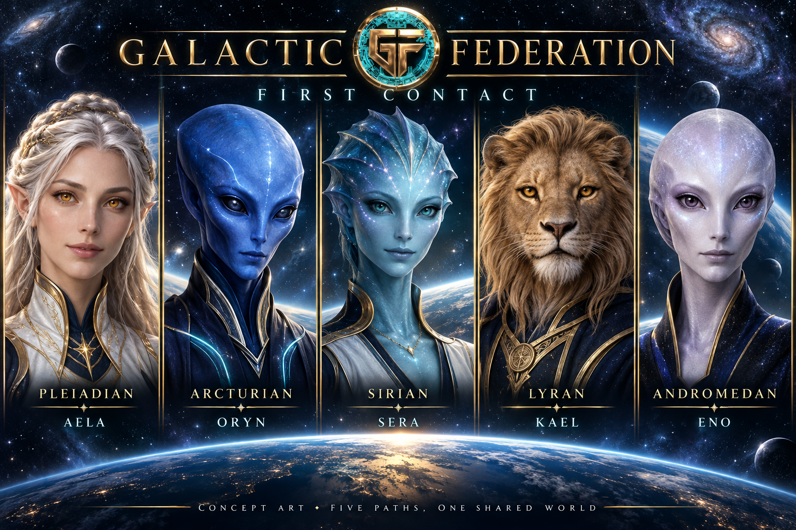

Intelligence · Accountability · Governance · Capital
Explore finance through interactive missions, inspect Solana token structures with Dossier, and follow the Federation’s on-chain finance build. $GFOF is our Solana token; our progress and public record are here for you to examine.
Missions and Dossier’s Structure Lens beta are available now. Staking is in preparation; no pool is open.
COMMAND NODE // GF-00ACCESS CLASS // PUBLIC
GFOF // MIGRATION PLAN
Preparing our next chapter.
The replacement mint is now announced and trades on TebFun. The separate, manually reconciled old-holder exchange remains 1:1 by token count. The main deadline is November 4, 2026, with extended ordinary intake through January 5, 2027. Registered locked allocations are tracked separately after their original unlock.
Old-mint transfers are accepted now. Confirm both mint addresses and the designated receiving wallet on the migration page before transferring. The new mint must never be sent to that wallet. Participation started October 5; dates use America/Chicago.
Play a mission about money and trust, try the fictional Lending Lab, or meet the community. These experiences are available now; the lending service and staking pool remain in preparation.

01 / AN INTRODUCTION
First Contact. Meet the Federation.
Meet five guides across 11 interactive missions about money, choices, and trust. Start with a three-minute introduction or bring the crew together in The Meridian Relay.
Fictional credits. No wallet or account. Play at your own pace.
02 / READ & EXAMINE
Examine what we are building.
Follow the private lending build, try a wallet-free financial simulation, and examine the published research and corrections that keep proposals separate from operating products.
We are designing optional GFOF reward pools for one, three, six, and twelve months. The new mint and trading venue require a fresh funding and provider review. No pool is open and deposits are not available.
1 month1% total target
3 months3% total target
6 months8% total target
12 months12% total target
These are proposed gross rewards for each full term, not live APY settings or funded offers. Final pool terms depend on provider review, funding, and published launch checks.
$GFOF New mint · TebFunNETWORK SolanaDOSSIER Alerts retiredARCHIVE PublicCOUNCIL AdvisoryFCC Epoch 2 · Shortage event
FEDERATION // NETWORK
Federation Network
One ecosystem. Specialized systems. Shared record.
COMMAND · $GFOF economic & participation layer
GF-00
Command
The Federation operates as one ecosystem with a shared record. $GFOF is the economic and participation layer within Command — not a separate division. Select a system to see how it connects.
COMMAND // CURRENT MISSION
Holder Migration
Already held the former GFOF token? Use the migration instructions to verify the two mint addresses, deadlines and receiving wallet before transferring.
Replacement distribution is pending reconciliation. The current token trades separately on TebFun; historical Streamflow locks hold the former mint only.
Dossier's Token Structure Lens is in public beta. Enter a Solana token mint to read its mint controls and up to 20 largest token accounts, with source slots and explicit unknowns. The read-only lookup can time out and cannot establish who controls an account, whether a launch was bundled, or where tokens were sold. Dossier's separate Program 01 convergence alerts are retired. Read the measured verdict.
STRUCTURE LENS // SOLANAPublic beta
InputSolana mint
AccountsUp to 20
EvidenceSource slots
LimitsNo bundle or sale verdict
Start with any valid Solana token mint. The dated September GFOF example concerns the former mint, not the replacement. Dossier labels only evidence it can verify.
Every commitment the Federation makes publicly is tracked on a corrections log — status-labeled, appended, never deleted. Forecasts are filed as byte-exact text and anchored to the Bitcoin blockchain via OpenTimestamps, so anyone can verify when a claim existed without trusting the Federation. Misses are documented with the same prominence as keeps.
FCC is the Federation's public capital-accountability experiment. Its methodology and record are public, but it is not an operating capital manager: there is no capital under management, no mandates, no strategies, and no counterparties. Epoch 2's latest recorded state is SHORTAGE_EVENT; the pre-execution freeze status was BLOCKED. Intake was consumed, and no rerun is authorized.
Explore the Research Log (canonical posts on Paragraph), the borrower-protective Liquidation Specification v0.2.2, and the Governance Specification v0.2. Lending now has a private prototype for selected accounting flows; it is not a public or audited lending service. See its progress and open gates. The governance specification records the current advisory deployment and preserves its earlier design history. The research publication's weekly cadence and missed weeks are documented in the corrections log.
An advisory DAO is live on Realms, gated to the former GFOF mint. No replacement-mint governance migration has been established. The realm is advisory only — no treasury, repository, site or token authority is routed through it. Historical old-mint escrow cannot vote. No broader decentralization claim is made.
The Federation's communications persona and the interface between visitor and Command. When you open a channel, it is Voss who answers for the Federation — measured, on the record, and pointed at what can be verified.